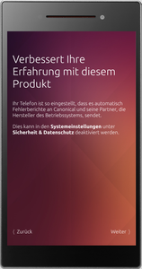

Einrichtung
Dieser Artikel bezieht sich auf Ubuntu Touch, die Variante von Ubuntu für mobile Geräte mit Touchscreen.
Getestet wurde der Artikel für folgende Version(en):
Ubuntu Touch 15.04 Vivid Vervet
 Auf Geräten mit Ubuntu Touch sind einige Dienste und Programme vorinstalliert. Einige dieser Anwendung sind jedoch nur auf dem jeweiligen Gerät verfügbar und können nicht nachinstalliert werden, da sie lizenztechnisch an das Gerät gebunden sind. Im Ubuntu Store können weitere Programme und Scopes aus unterschiedlichen Bereichen installiert und ggf. gekauft werden. Hierfür ist eine kostenlose Registrierung bei Ubuntu One erforderlich. Den Store erreicht man über
Auf Geräten mit Ubuntu Touch sind einige Dienste und Programme vorinstalliert. Einige dieser Anwendung sind jedoch nur auf dem jeweiligen Gerät verfügbar und können nicht nachinstalliert werden, da sie lizenztechnisch an das Gerät gebunden sind. Im Ubuntu Store können weitere Programme und Scopes aus unterschiedlichen Bereichen installiert und ggf. gekauft werden. Hierfür ist eine kostenlose Registrierung bei Ubuntu One erforderlich. Den Store erreicht man über  und die entsprechende Schaltfläche. Eine inoffizielle Übersicht über die Apps gibt es auf uApp Explorer
und die entsprechende Schaltfläche. Eine inoffizielle Übersicht über die Apps gibt es auf uApp Explorer  .
.
Ersteinrichtung¶
Beim ersten Start des Geräts findet eine Grundkonfiguration statt:
| Sprache auswählen |
| Sicherheit |
| WLAN konfigurieren |
| Standortdaten |
|  |
| Hinweis |
| Geschafft! |
| Startbildschirm |
| Scopes |
Unter Sicherheit kann die Art des Zugriffsschutzes festgelegt werden. Zum Entsperren kann man ein Muster, eine PIN oder ein Passwort verwenden. Alternativ kann der Zugriffsschutz hier deaktiviert werden.
Hinweis:
Bei Eingabe eines falschen Zugangscodes wird das Gerät für einen bestimmten Zeitraum gesperrt. Nach Verstreichen dieser Zeitspanne kann der Code erneut eingegeben werden.
Nach dem ersten Start des Geräts sollten die Aktualisierungen eingespielt werden. Wenn auch Apps aktualisiert werden sollen, ist ein Zugang bei Ubuntu One erforderlich.
Bedienung¶
| Einführung |
Ubuntu Touch ist optisch an die Desktop-Oberfläche Unity angelehnt und auf eine intuitive Bedienung ausgelegt. Die Navigation erfolgt meist durch Wischen. Zum Beispiel bringt ein kurzes Wischen vom linken Rand zur Mitte eine Leiste von bevorzugten Anwendungen zum Vorschein. Durch kurzes Wischen über den rechten Rand navigiert man generell zur zuletzt verwendeten Anwendung zurück. Ein langer Wisch von rechts führt auf eine 3D-Übersicht aller geöffneten Apps. Ein kurzes Antippen öffnet das gewünschte Programm. Man kann so ebenfalls zu Eingabefeldern gelangen. Hält man ein Element oder die Eingabezeile für circa 3 Sekunden gedrückt so öffnet sich - je nach Anwendung - ein Optionsmenü. Um einen bestimmten Ausschnitt zu vergrößern bzw. zu verkleinern werden zwei Finger benötigt. Die Finger werden abhängig von der gewünschten Aktion auseinander- oder zusammengeführt. Tippt man eine Stelle (z.B. ein Bild in der Galerie) 2x schnell hintereinander an wird auf diese Stelle gezoomt. Ein erneutes Ausführen des zweimaligen Tippens zoomt aus dem Ausschnitt heraus.
Wenn das Gerät gesperrt ist, sieht man auf dem Startbildschirm in Kreisform eine kleine, Statistik über erhaltene SMS, die Anzahl heute aufgenommener Fotos usw.,.
Der Kreis bildet sich durch je einen Punkt für jeden Tag des Monats, wobei durch einen dickeren Punkt für den aktuellen Tag schnell und verspielt der Fortschritt des Monats angezeigt wird. Dieser Infobereich wird von der ursprünglich bestellbaren Schutzhülle  des bq Aquaris E4.5 auch extra nicht bedeckt. Entsperrt wird das Gerät durch zur Seite schieben des Startbilds. Dadurch gelangt man zum ersten Scope.
des bq Aquaris E4.5 auch extra nicht bedeckt. Entsperrt wird das Gerät durch zur Seite schieben des Startbilds. Dadurch gelangt man zum ersten Scope.
Auch innerhalb von Anwendungen wird oft per Wischen navigiert, etwa in der Email-App Dekko. Dort erscheint beim zur Seite schieben einer einzelnen Email nach rechts der Papierkorb, beim nach links schieben ein weiteres Auswahlmenü (Antworten, Markieren...), während durch Ziehen des ganzen Posteingangs nach unten neue Emails abgerufen werden. Längeres Gedrückthalten einer Email öffnet dagegen einen Auswahldialog, in welchem man diese oder mehrere Emails für verschiedene Aktionen wie etwa "Als gelesen markieren" auswählen kann. Am unteren Bildschirmrand kann man über die eingeblendete Schaltfläche neue Emails versenden.
Über die Statusleiste am oberen Rand gelangt zu den wichtigsten Einstellungen wie Netzwerke, Lautsprecher, etc. ohne das aktuell laufende Programm zu verlassen. Am unteren Bildschirmrand verbergen sich teilweise weitere Steuerelemente des derzeit verwendeten Programms.
Scopes¶
Scopes sind eine Besonderheit, welche Ubuntu Touch von anderen Hersteller unterscheidet. Die Informationen aus unterschiedlichen Quellen werden übersichtlich auf einer Seite angezeigt. Somit müssen nicht diverse Anwendungen nacheinander gestartet werden, um sich entsprechend zu informieren.
Beispiel: Benötigt werden die aktuelle Außentemperatur, der örtliche Busfahrplan sowie der Facebook-Status. Alle diese Informationen sind in nebeneinanderliegenden Scopes vereint, durch die man einfach durchblättern kann.
Scopes werden konfiguriert indem man vom unteren Bildschirmrand eines Scopes oder auf der Startseite über die Schaltfläche
^ nach oben wischt. Hier können weitere installierte Scopes für die Anzeige auf der Startseite (de)aktiviert werden. Dies geschieht über den Stern . Über die Schaltfläche  am oberen Bildschirmrand wird der Ubuntu Store gestartet. Zum beenden des Menüs wird auf
< "Verwalten" getippt.
am oberen Bildschirmrand wird der Ubuntu Store gestartet. Zum beenden des Menüs wird auf
< "Verwalten" getippt.
| Grundbedienung | |
| Schaltfläche | Beschreibung |
| Inhalte suchen. | |
| Zusätzliche Einstellungsmöglichkeiten vornehmen. Nicht alle Scopes verfügen über diese Möglichkeit. | |
| Ein Scope kann über diese Schaltfläche aus der Liste entfernt werden. | |
| Ubuntu Store | |
| Hier wird die Anzahl der genutzen Scopes sowie die aktuelle Position in der Liste angezeigt. | |
| > < ^ | Navigationstasten in den Scopes. |
Um die Scopes zu sortieren wählt man eines unter "Startseite" aus und hält dieses länger gedrückt. Im neuen Fenster sind die derzeit in Verwendung befindlichen Scopes aufgeführt. Tippt man auf das Symbol des zu verschiebenden Scopes am rechten Bildschirmrand kann dieses an die gewünschte Position verschoben werden. Über die Schaltfläche X "Verwalten" wird dieses Menü verlassen.
Eine Übersicht der verfügbaren Scopes bietet die Internetseite uApp Explorer . Eine kleine Auswahl ist auf dieser Seite zu finden.
Programme¶
Einige nützliche Programme sind im Ubuntu Store vorhanden. Um Programme installieren zu können, ist ein Zugang bei Ubuntu One erforderlich. Dieser muss vorher angelegt werden. Im Artikel zu den Programmen findet man eine kleine Auswahl nützlicher Anwendungen, welche nicht vorinstalliert sind.
Generell unterscheidet man zwischen HTML-Apps, nativen Anwendungen, WebApps und den Scopes.
Hinweis:
Bei bereits installierten Programmen kann man das Programmicon länger gedrückt halten und gelangt so zum Ubuntu Store mit der Produktbeschreibung. Über diesen können bereits installierte Programme und Scopes wieder vom System gelöscht werden.
Bevorzugte Anwendungen¶
Die Leiste mit den bevorzugten Anwendungen, welche durch ein kurzes Wischen vom linken Rand zur Bildschirmmitte angezeigt werden, kann den eigenen Bedürfnissen entsprechend angepasst werden. Nach dem Start eines Programms, z.B. dem Dateimanager, erscheint dieses in der Leiste. Wird das Icon für ein paar Sekunden gedrückt gehalten kann man im neuen Menüpunkt "Verknüpfung anheften" wählen. Das Programm wird dann in die Leiste übernommen.
Bereits angeheftete Programme können über diesen Weg auch aus der Liste entfernt werden. Hier ist lediglich "Verknüpfung entfernen" zu wählen.
Konfiguration¶
Die Systemeinstellungen erreicht man entweder über die Leiste mit den bevorzugten Anwendungen oder aus dem Startbildschirm heraus. Sie werden in die Hauptbereiche Netzwerk, Persönliches und System unterteilt.
Eine Auswahl an Konfigurationsmöglichkeiten sind in der Tabelle zu finden. Sie bildet jedoch nicht den kompletten Umfang ab.
| Konfiguration | ||
| Bereich | Pfad | Beschreibung |
| Aktualisierungsverwaltung | "Systemeinstellungen → Aktualisierungen" | Updates einspielen. |
| Bluetooth | "Systemeinstellungen → Bluetooth" | (De)Aktivierung von Bluetooth. Koppeln und verwalten von Geräten. |
| Datenschutz | "Systemeinstellungen → Sicherheit & Datenschutz" | Einstellungen am Startbildschirm vornehmen. |
| "Systemeinstellungen → Sicherheit & Datenschutz → Standortzugriff" | GPS-Standortservice auf dem Gerät (de)aktivieren. | |
| Dual-SIM | "Systemeinstellungen → Netz" | Sofern man zwei Karten in Benutzung hat, kann es sinnvoll sein, wenn man den jeweiligen Karten einen eigenen Namen vergibt. Hier die jeweilige Karte auswählen und geeignete Einträge vornehmen. Des Weiteren ist es oft nötig, die APN-Einstellungen des Netzanbieters einzutragen. Es kann hier ebenfalls definiert werden, welche Karte für Telefonate/SMS verwendet werden soll. |
| Emoticons | "Systemeinstellung → Sprache & Text → Tastaturbelegungen" | Zur Verwendung von Emoticons den Eintrag "Emoji" aktivieren. Diese findet man anschließend auf der Tastatur unter Sprachauswahl. |
| Energieeinstellungen | "Systemeinstellung → Batterie" | Optimierung des Energieverbrauchs. |
| Klingelton | "Systemeinstellung → Audio → Klingelton → Eigener Klingelton" | Eigenen Klingelton auswählen. |
| Konten | "Systemeinstellung → Konten" | Konten (u.a. U1 , GMail und Twitter) verwalten und hinzufügen. |
| Verbindungstyp | "Systemeinstellungen → Netz" | Datenübertragung festlegen. |
| Vibrationen Tastendruck | "Systemeinstellungen → Sprache & Text → Tastaturvibration" | Das Gerät vibriert bei jedem Tastendruck. Möchte man nicht, dass das Gerät beim Berühren von Bedienelementen vibriert, kann man dies abstellen. |
| Wähltöne | "Systemeinstellungen → Telefon → Tonwahl-Geräusche" | (De)Aktivierung der Töne. |
| Zeitzone | "Systemeinstellung → Zeit & Datum" | Auswahl der Zeitzone. |
| Zugriffsrechte | "Systemeinstellungen → Sicherheit & Datenschutz" | Anpassung der Zugriffsrechte. Hier werden unter anderem die Berechtigungen von Anwendungen verwaltet und einzelne Funktionen können vom Benutzer freigegeben bzw. gesperrt werden. |
Es gibt weitere Konfigurationsmöglichkeiten, welche aufgrund des relativ frühen Entwicklungsstadiums von Ubuntu Touch zum Teil noch schlecht dokumentiert bzw. getestet, nur rudimentär vorhanden oder manchmal nur über Umwege zu erreichen sind. Diese können jedoch bereits jetzt, momentan oft nur über ein Terminal, gesteuert werden. Diesem Bereich widmet sich der Artikel Erweiterte Konfiguration.
Ordnerstruktur¶
Die auf der Micro-SD-Karte und im Homeverzeichnis des Geräts hinterlegte Ordnerstruktur gliedert sich nach Art und Quelle der Daten.
Wenn man im Dateimanager von Ubuntu Touch die Option Versteckte Dateien anzeigen auswählt, kann man auch Programm-Einstellungen und -Daten löschen. Die Ordnernamen können dabei dem uApp Explorer entnommen werden, z.B. .local/share/apu.johangm90 für Cloud Music. Bei erneutem Start des Dateimanagers ist die Option wieder deaktiviert.
| Ordnerstruktur | |
| Ordner | Beschreibung |
| Pictures | Bilder zur Verwendung mit dem Bildbetrachter hier sichern. |
| Pictures/com.ubuntu.camera | Speicherort für die mit der Kameraanwendung im JPG-Format gemachten Fotos. |
| Pictures/Screenshots | Bildschirmfotos werden in diesem Ordner als PNG-Dateien abgelegt. |
| Videos | Ablageort für Videos, welche vom System verwendet werden sollen. |
| Videos/com.ubuntu.camera | Mit der Kameraanwendung aufgenommene Videos werden an dieser Stelle gespeichert. |
| Music | Musikdateien zur Verwendung im Gerät hier speichern. |
| Documents | Dokumente zur Betrachtung mit einem geeigneten Programm werden an diese Stelle kopiert. |
| Downloads | Heruntergeladene Inhalte werden an diesem Ort hinterlegt. |
| .local/share/ | Ordner mit Einstellungen und Daten einzelner Apps. |
Hinweis:
Um Daten zwischen einem Computer und dem Gerät mit einem USB-Kabel zu übertragung muss das Media Transfer Protocol installiert sein. Das Kabel darf während der Übertragung nicht abgezogen werden.
Formate¶
Die folgenden Formate werden vom Betriebssystem unterstützt:
| Formate | |
| Bereich | Beschreibung |
| Audio | .mp3, .ogg und .wav. |
| Bilder | .bmp, .gif, .jpg sowie .png. |
| Texte | .txt und .pdf. |
| Video | .mp4, .wmv, .avi, .mov und .mkv. |
Details zu den einzelnen Formaten können unter Dateinamenserweiterungen in Erfahrung gebracht werden.
Kontakte importieren sowie exportieren¶
Nachdem man die ersten Aktualisierungen eingespielt hat, kann man bereits bestehende Kontakte einer bereits eingelegten SIM-Karte importieren. Die App "Kontakte" weist beim ersten Start darauf hin. Das Menü erreicht man jederzeit über deren Einstellungen. Die meisten Handys bieten einen Export zumindest der gespeicherten Telefonnummer(n) zu einem Kontakt auf die SIM-Karte an.
Eine Alternative einschließlich weiterer Daten wie gespeicherter Fotos, welche Kontakten zugeordnet sind, ist es, eine .vcf-Datei erstellen (z.B. durch Export aus einem vorhandenen Adressbuch) und sich diese per E-Mail zuzusenden. Über die Anwendung E-Mail im Gerät die Datei abrufen und importieren. Hier "Kontakte" als zu verarbeitendes Programm wählen.
Hinweis:
E-Mail-Dienste und E-Mail-Programme bieten in der Regel den Import/Export der Kontaktinformationen an.
Eine weitere Möglichkeit, Kontakte speziell von Ubuntu Touch Geräten mit dem Terminal zu exportieren, um sie z.B. zu sichern oder auf einem anderen Ubuntu Touch Gerät importieren zu können, wird in Ubuntu_Touch/Erweiterte_Konfiguration beschrieben.
Datenschutz¶
Datenschutz stellt besonders in unserer heutigen Zeit nach den Enthüllungen von Edward_Snowden einen wichtigen Baustein technischer vernetzter Systeme dar. Die meisten mobilen Systeme gehen sehr leichtfertig mit diesem Thema um. Auch bei Ubuntu Touch gibt es Pros und Contras. So bequem die Scopes in der Praxis auch sein mögen: Bisher ist im Detail unklar, welche Information wann an Canonical oder Anbieter von Apps übermittelt werden und wie man die Übermittlung beeinflussen oder blockieren kann. In "Systemeinstellungen → Sicherheit & Datenschutz" lies sich der Internetzugriff jedoch unter "Dash-Suche" komplett für alle Scopes unterbinden, wurde mittlerweile jedoch entfernt (Stand 16.01.2016). Die weitere Entwicklung dessen bleibt abzuwarten, ist jedoch mit der Nutzung von Apps auf anderen Betriebssystemen vergleichbar:
Daten, die man einer App oder Scope anvertraut, können zumindest innerhalb diesem Programm verarbeitet werden, ggf. auch online. Näheres kann man in den jeweiligen Datenschutzbestimmungen eines Programmes erfahren oder beim Programmautor erfragen bzw. beim Diensteanbieter nachlesen. Meist sind nachinstallierbare Apps und Scopes Fremdsoftware, aber auch einige der vorinstallierten, welche man jedoch nicht nutzen muss. Im Forenthema Ubuntu Touch entrümpeln? erfährt man, wie man die click-Pakete von Apps im Terminal entfernen kann. Dies ist jedoch nicht notwendig, da ohne deren Start oder gar Account-Einrichtung keinerlei Daten gesammelt werden können.
Die Einstellmöglichkeiten unter "Systemeinstellungen → Sicherheit & Datenschutz" sind noch etwas begrenzt. Z.B. beim ersten Start der nachinstallierbaren Google Maps (Web) App wird gefragt, ob dieser App der Zugriff auf Standortdaten erlaubt werden soll. Des Weiteren kann die nachinstallierbare App Permy die Rechte von Anwendungen zumindest anzeigen lassen. Profis können sich in der Terminal App ein detaillierteres Bild von den Rechten machen und sie eventuell beeinflussen. Auffällig ist momentan, dass für viele Apps sehr viele Logdateien anfallen, was durch die noch fehlende Systemverschlüsselung bei extrem hohen Sicherheitsanforderungen unter Umständen ein Nachteil sein kann. Bisher sind dort jedoch nur Metadaten zu finden gewesen, also keine Inhalte von Apps.
Wie das komplette Betriebssystem sind viele der derzeitig verfügbaren Apps Freie_Software, jedoch meist nicht die Treiber, deren Programmiercode somit nicht überprüfbar, jedoch in Containern bestmöglich abkapselbar, ist. Voraussichtlich sind dadurch länger als bei den meisten Android Geräten Systemaktualisierungen verfügbar, da durch die Abstrahierung der Gerätetreiber sicherheits- und damit datenschutzrelevante Systemaktualisierungen einfacher möglich sind. Dies liegt daran, dass sie technisch zentral vom Betriebssystem- anstatt Geräte-Hersteller kommen können. Auch die Freie Software Gemeinschaft kann sich so einfacher diesem Projekt annehmen.
Ferner lässt sich unter "Systemeinstellungen → Sicherheit & Datenschutz" einstellen, ob der "Status auf dem Startbildschirm" angezeigt wird oder nicht. Deaktiviert man ihn, wird die Statistik des Startbildschirms, welche unter Bedienung erläutert wurde, nicht angezeigt. Die im Launcher gepinnten Apps sind jedoch weiterhin sichtbar und sogar aufrufbar, allerdings in der Regel hinter dem Sperrbildschirm verborgen. Hier sind zukünftig Ausnahmen für etwa Kamera oder Onlineradio denkbar. Die Einstellungen der Statusleiste lassen sich dagegen direkt aufrufen und sogar verändern - dazu zählt auch der Aufruf und das direkte Beantworten von erhaltenen Nachrichten, allerdings nur von in "Systemeinstellungen → Benachrichtigungen" erlaubten Apps.
Unter "Systemeinstellungen → Sicherheit & Datenschutz" lässt sich auch das Verhalten von Standortabfragen einstellen, z.B. komplett deaktivieren oder "Nur durch GPS (ungenauer)" aktivieren sowie eine Liste von Apps ansehen, denen man bereits einmal auf Nachfrage aus der App heraus eine Berechtigung gab oder verweigerte, sowie deren Berechtigung entziehen bzw. vergeben. Bei "Systemeinstellungen → Sicherheit & Datenschutz → Berechtigungen von Anwendungen" lässt sich diese Standort-Liste für Apps ebenfalls nochmals abrufen, aber auch für Kamera und Mikrofon bestimmten Apps, wie etwa der App "Kamera", die Berechtigung entziehen oder vergeben. "Online-Konten" für Apps oder Internetseiten werden ebenfalls dort verwaltet.
Links aus Webapps werden standardmäßig im Browser geöffnet, um URL-Spoofing zu verhindern.
Tastenkürzel¶
| Tastenkürzel | |
| Taste(n) | Beschreibung |
 | Telefon einschalten (2s), aufwecken, ausschalten oder einen Neustart durchühren. |
| Vol+ / Vol- | Lautstärke ändern. |
| Vol+ + Vol- | Durch gleichzeitiges Drücken der beiden Tasten wird ein Bildschirmfoto aufgenommen und im Unterordner Screenshots abgespeichert, welcher in Pictures liegt. |
| +
Vol+ | Alternativer Weg, um das Gerät zurückzusetzen. |
| +
Vol- | Gerät in den Werksmodus versetzen. |
Tipps¶
Tipps, unter anderem zur Benutzung des Dateimanagers, der Einrichtung eigener Klingeltöne sowie zur Nutzung der Terminal App, befinden sich in einem eigenen Artikel Tipps_und_Tricks.
Problembehebung¶
Zugriff auf Systemkomponenten¶
Sollte der Zugriff von einzelnen Anwendungen auf die Kamera, den Standort oder das Mikrofon nicht wie erwartet funktionieren, so sind die Zugriffsrechte anzupassen.

- Erstellt mit Inyoka
-
 2004 – 2017 ubuntuusers.de • Einige Rechte vorbehalten
2004 – 2017 ubuntuusers.de • Einige Rechte vorbehalten
Lizenz • Kontakt • Datenschutz • Impressum • Serverstatus -
Serverhousing gespendet von